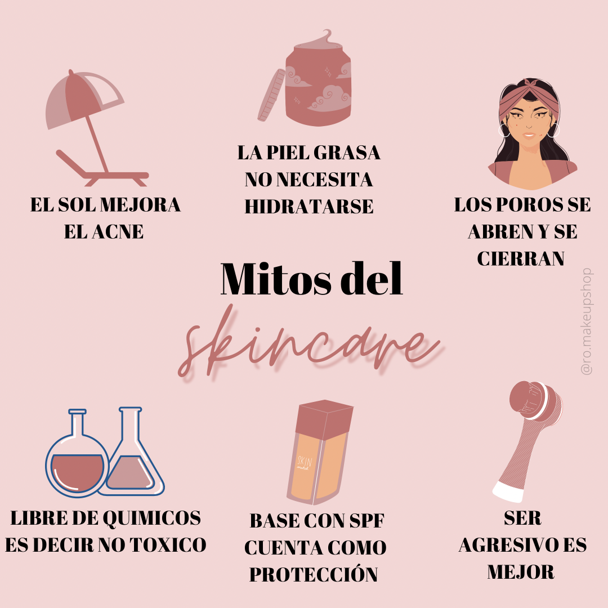
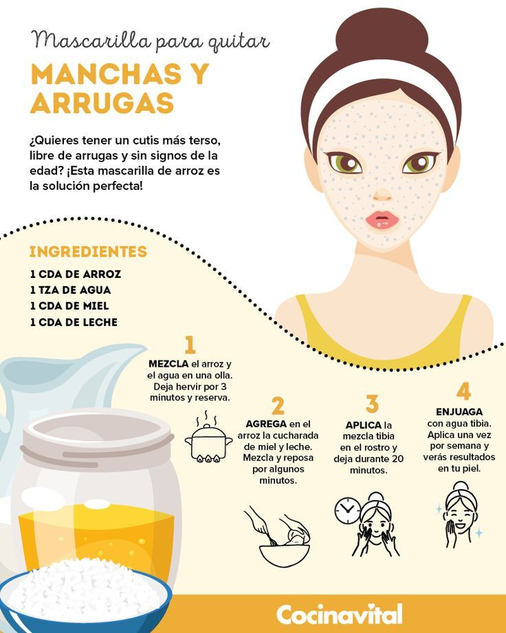

Mitos y verdades
Hay muchos mitos en el mundo del skin care (cuidado de la piel) que circulan en las redes, nos hablan de productos o formulas caseras que prometen mejorar el aspecto de nuestra piel a pesar de no estar comprobado, lo que puede ser un riesgo para nuestra piel y no nos garantizan mejorala.
Por eso a continuacion te dejaremos imagenes de recetas caseras que debes evitar poner en tu rostro.


Atencion:
Debes evitar cualquiera de estos pruductos ya que pueden dañar seriamente la piel, alterar su PH natural, quemarte, afectar los aceites naturales de tu piel, causar pequeñas heridas, irritar y entre muchas cosas negativas mas.